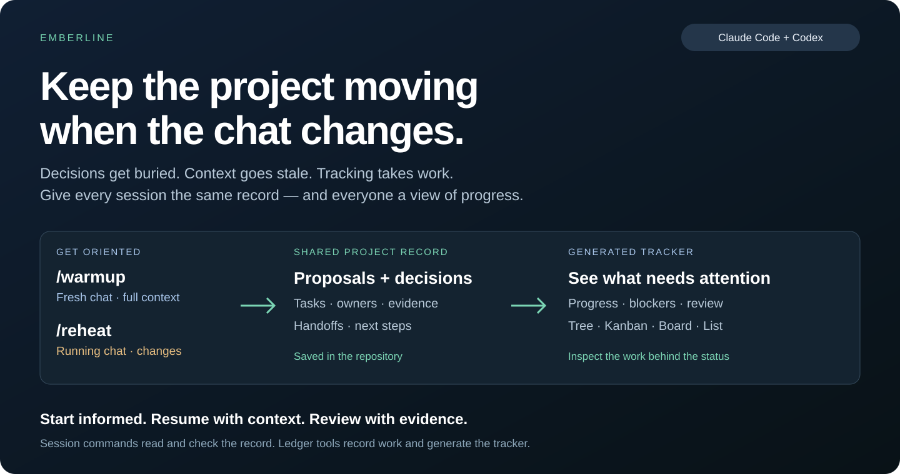
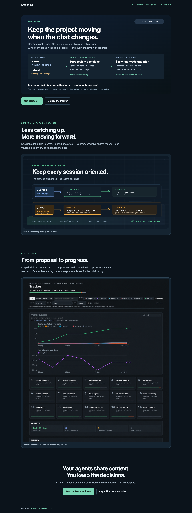
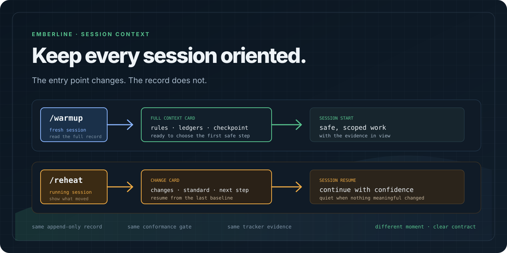
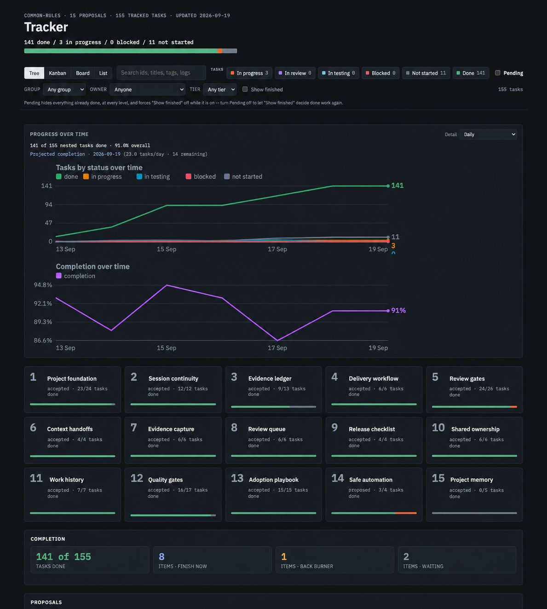

Presentation accepted · publishing preparation
Emberline
The proposed public identity: shared project memory and a delivery tracker for Claude Code and Codex. The repository remains common-rules.
The GitHub-style README
Local GitHub-style approximation. GitHub itself has not been published or verified.The first-fold concept

The actual marketing page
A short visual story. Open the live HTML page → Technical details live in the linked guide.

The session diagram

The edited tracker snapshot
This is the actual tracker surface with only the proposal labels cleaned into a coherent public sample set.

Review status
Presentation accepted on 19 September 2026. Selected name: Emberline — Shared Memory & Delivery Tracker for AI Agents. Licensing and name clearance remain pre-publication decisions. Desktop and mobile renders have been checked for image loading, local links, and horizontal overflow. Publishing has not started.
Concept visuals are illustrative; the actual tracker remains linked above.